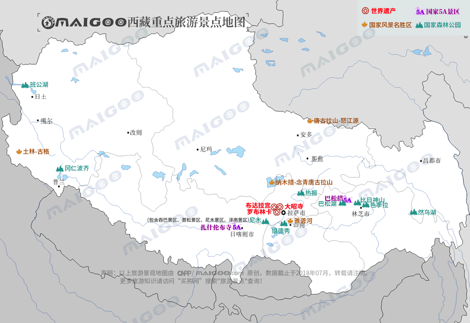
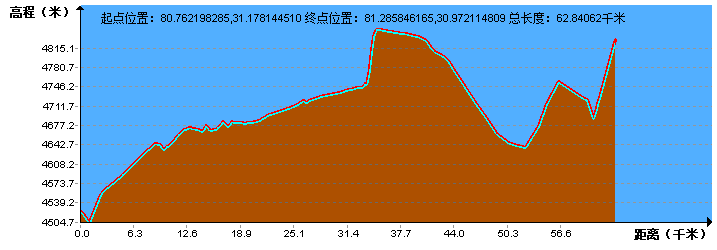
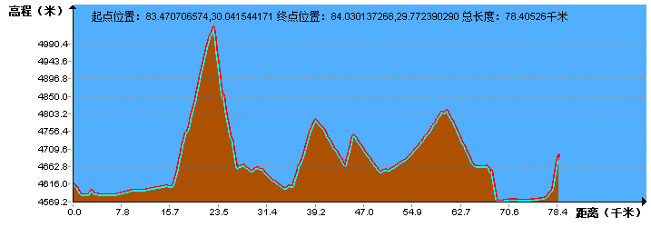
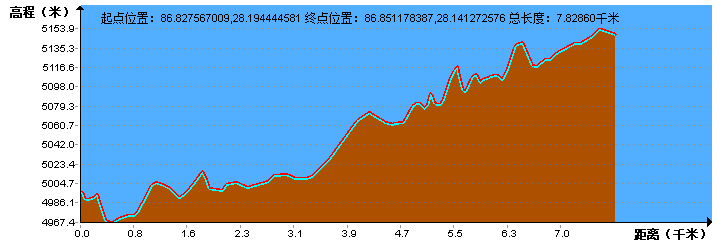
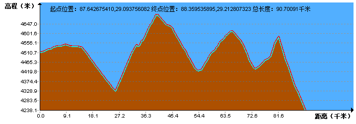
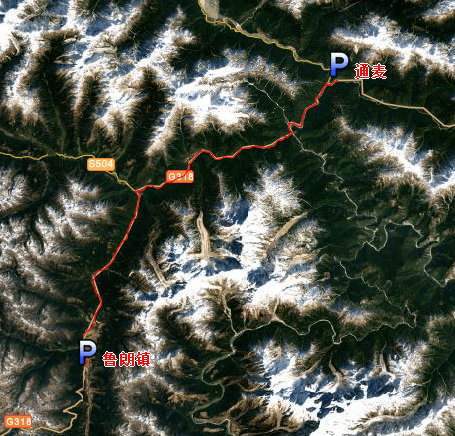
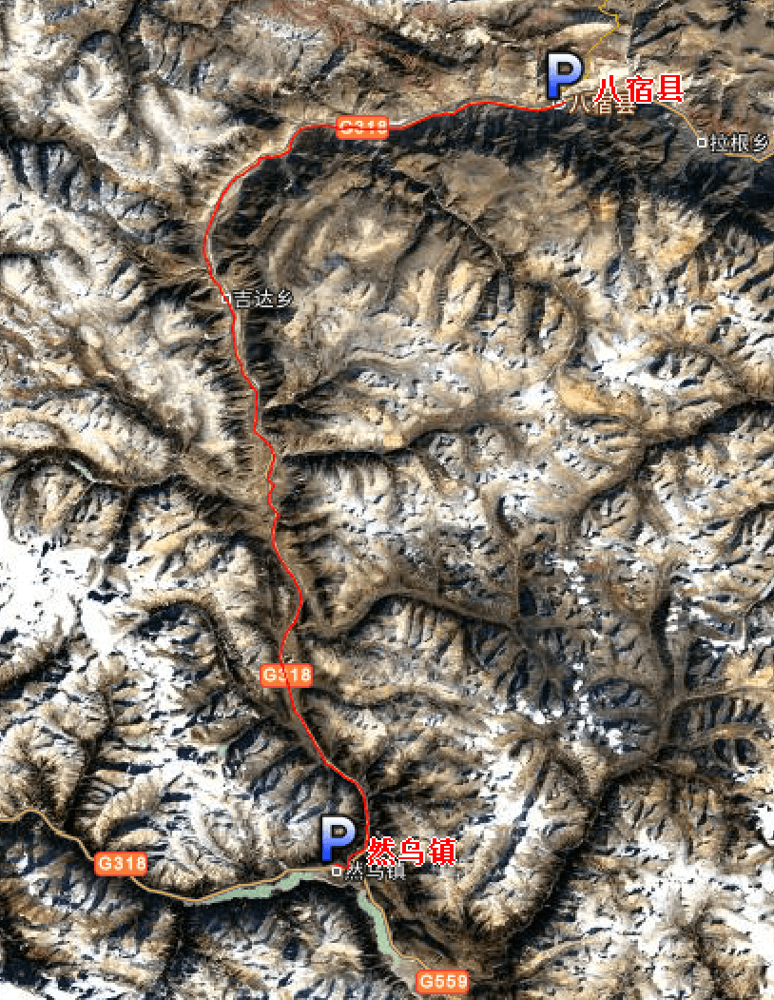

| | | | | |
| - | - | - | - | - |
|<b>别名</b>|藏、乌斯藏、吐蕃||<b>著名景点</b>|布达拉宫、大昭寺、甘丹寺、珠穆朗玛峰、雅鲁藏布江等|
|<b>行政区类别</b>|自治区||<b>机 场</b>|拉萨贡嘎国际机场、昌都邦达机场等|
|<b>所属地区</b>|中国西南地区||<b>火车站</b>|拉萨站、日喀则站、林芝站、那曲站|
|<b>下辖地区</b>|6个地级市、1个地区||<b>车牌代码</b>|藏A-藏G|
|<b>电话区号</b>|（+86）0891-0897||<b>GDP</b>|1310.6亿元（2017年）|
|<b>邮政区码</b>|850000-860000||<b>人均GDP</b>|39650元|
|<b>地理位置</b>|中国西南地区边疆，青藏高原西南部||<b>历史名人</b>|松赞干布、阿沛·阿旺晋美等|
|<b>面 积</b>|122.84万平方千米||<b>海拔最高端</b>|珠穆朗玛峰|
|<b>人 口</b>|330.54万人（2016年）||<b>平均海拔</b>|4000米以上|
|<b>方 言</b>|藏语（卫藏方言、康方言）||<b>根基文化</b>|象雄文化|
|<b>气候条件</b>|西北严寒、东南温暖湿润||<b>现任领导</b>|党委书记吴英杰，区主席齐扎拉|
| <b>西藏生活文化</b> | <b>西藏特色文化</b> | <b>西藏曲艺文化</b> | <b>西藏建筑文化</b> | <b>西藏宗教文化</b> |
| - | - | - | - | - |
| <a href="javascript:;" onclick="live(this);">习俗/民俗</a> | <a href="javascript:;" onclick="feature(this);">哈达</a> | <a href="javascript:;" onclick="art(this);">藏戏</a> | <a href="javascript:;" onclick="building(this);">藏式门窗</a> | <a href="javascript:;" onclick="religion(this);">转经筒</a> |
| <a href="javascript:;" onclick="live(this);">方言文化</a> | <a href="javascript:;" onclick="feature(this);">锅庄舞</a> |-| <a href="javascript:;" onclick="building(this);">西藏建筑风格</a> | <a href="javascript:;" onclick="religion(this);">风马旗</a> |
| <a href="javascript:;" onclick="live(this);">节日文化</a> | <a href="javascript:;" onclick="feature(this);">藏族服装</a> | - | - | <a href="javascript:;" onclick="religion(this);">玛尼石</a> |
| <a href="javascript:;" onclick="live(this);">嫁娶文化</a> | <a href="javascript:;" onclick="feature(this);">尼木三绝</a> | - |-|<a href="javascript:;" onclick="religion(this);">宗教/庙宇/庙会</a>|
| <a href="javascript:;" onclick="live(this);">饮食文化</a> | <a href="javascript:;" onclick="feature(this);">西藏吉祥八宝</a> | -|-|-|
| <a href="javascript:;" onclick="live(this);">西藏禁忌</a> | <a href="javascript:;" onclick="feature(this);">格萨尔史诗</a> |-| -|-|
|-| <a href="javascript:;" onclick="feature(this);">藏医药</a> |-|-|-|
## <i class="fa fa-file-text-o"></i>&nbsp;目录（Table of Contents）
+ [I. 总路线图](#one)
+ [II. 景点](#two)
+ [III. 路线规划](#three)
- [1、叶城 - 阿克美其特村](#1)
- [2、阿克美其特村 - 库地](#2)
- [3、库地 - 204道班](#3)
- [4、204道班 - 黑恰达坂](#4)
- [5、黑恰达坂 - 三十里营房](#5)
- [6、三十里营房 - 红柳滩](#6)
- [7、红柳滩 - 泉水湖检查站](#7)
- [8、泉水湖检查站 - 松西村](#8)
- [9、松西村 - 多玛乡](#9)
- [10、多玛乡 - 日土县](#10)
- [11、日土县 - 噶尔县](#11)
- [12、噶尔县 - 那木如村](#12)
- [13、那木如村 - 门士乡](#13)
- [14、门士乡 - 巴嘎村](#14)
- [15、巴嘎村 - 霍尔乡](#15)
- [16、霍尔乡 - 马攸检查站](#16)
- [17、马攸检查站 - 帕羊镇](#17)
- [18、帕羊镇 - 仲巴县](#18)
- [19、仲巴县 - 昔日达吉岭寺](#19)
- [20、昔日达吉岭寺 - 萨嘎县](#20)
- [21、萨嘎县 - 佩枯错](#21)
- [22、佩枯错 - 门士乡](#22)
- [23、门士乡 - 岗嘎镇](#23)
- [24、岗嘎镇 - 藏普村](#24)
- [25、藏普村 - 绒布寺](#25)
- [26、绒布寺 - 珠峰大本营](#26)
- [27、珠峰大本营 - 扎西宗村](#27)
- [28、扎西宗村 - 定日县](#28)
- [29、定日县 - 拉孜县](#29)
- [30、拉孜县 - 吉定镇](#30)
- [31、吉定镇 - 江孜县](#31)
- [32、江孜县 - 浪卡子县](#32)
- [33、浪卡子县 - 曲水县](#33)
- [34、曲水县 - 拉萨](#34)
- [35、拉萨 - 羊八井镇](#35)
- [36、羊井八镇 - 高美村](#36)
- [37、高美村 - 加岗村](#37)
- [38、加岗村 - 纳木错乡](#38)
- [39、纳木错乡 - 日布村](#39)
- [40、日布村 - 尼玛江热乡](#40)
- [41、尼玛江热乡 - 一四三道班](#41)
- [42、一四三道班 - 加兴乡](#42)
- [43、加兴乡 - 巴河镇](#43)
- [44、巴河镇 - 林芝市](#44)
- [45、林芝市 - 鲁朗](#45)
- [46、鲁朗镇 - 通麦](#46)
- [47、通麦 - 波密](#47)
- [48、波密 - 然乌镇](#48)
- [49、然乌镇 - 八宿县](#49)
- [50、八宿县 - 邦达镇](#50)
- [51、邦达镇 - 左贡县](#51)
- [52、左贡县 - 登巴村](#52)
- [53、登巴村 - 芒康县](#53)
- [54、芒康县 - 盐井村](#54)
<h2 id="one"><i class="fa fa-circle-o-notch fa-spin"></i>&nbsp;总路线图</h2>
<img data-src="../imgs/region-line/xizang/xizang.png" width="80%" height="80%" title="总路线图"/>
<h2 id="two"><i class="fa fa-star-o"></i>&nbsp;景点</h2>
<img data-src="../imgs/region-line/xizang/scene-spot.png" width="80%" height="80%" title="景点"/>

<h2 id="three"><i class="fa fa-spinner fa-pulse"></i>&nbsp;路线规划</h2>
<h4 id="1">1、叶城 - 阿克美其特村&nbsp;&nbsp;<i class="fa fa-bicycle fa-2x"></i></h4>
<h4 id="2">2、阿克美其特村 - 库地&nbsp;&nbsp;<i class="fa fa-bicycle fa-2x"></i></h4>
<h4 id="3">3、库地 - 204道班&nbsp;&nbsp;<i class="fa fa-bicycle fa-2x"></i></h4>
<h4 id="4">4、204道班 - 黑恰达坂&nbsp;&nbsp;<i class="fa fa-bicycle fa-2x"></i></h4>
<h4 id="5">5、黑恰达坂 - 三十里营房&nbsp;&nbsp;<i class="fa fa-bicycle fa-2x"></i></h4>
<h4 id="6">6、三十里营房 - 红柳滩&nbsp;&nbsp;<i class="fa fa-bicycle fa-2x"></i></h4>
<img data-src="../imgs/region-line/xizang/6t.png" title="6、三十里营房 - 红柳滩"/>
<h4 id="7">7、红柳滩 - 泉水湖检查站&nbsp;&nbsp;<i class="fa fa-bicycle fa-2x"></i></h4>
<h4 id="8">8、泉水湖检查站 - 松西村&nbsp;&nbsp;<i class="fa fa-bicycle fa-2x"></i></h4>
<h4 id="9">9、松西村 - 多玛乡&nbsp;&nbsp;<i class="fa fa-bicycle fa-2x"></i></h4>
<h4 id="10">10、多玛乡 - 日土县&nbsp;&nbsp;<i class="fa fa-bicycle fa-2x"></i></h4>
<h4 id="11">11、日土县 - 噶尔县&nbsp;&nbsp;<i class="fa fa-bicycle fa-2x"></i></h4>
<h4 id="12">12、噶尔县 - 那木如村&nbsp;&nbsp;<i class="fa fa-bicycle fa-2x"></i></h4>
<h4 id="13">13、那木如村 - 门士乡&nbsp;&nbsp;<i class="fa fa-bicycle fa-2x"></i></h4>
<h4 id="14">14、门士乡 - 巴嘎村&nbsp;&nbsp;<i class="fa fa-bicycle fa-2x"></i></h4>
<img data-src="../imgs/region-line/xizang/14.png" width="61%" height="40%" title="14、门士乡 - 巴嘎村"/>

<h4 id="15">15、巴嘎村 - 霍尔乡&nbsp;&nbsp;<i class="fa fa-bicycle fa-2x"></i></h4>
<h4 id="16">16、霍尔乡 - 马攸检查站&nbsp;&nbsp;<i class="fa fa-bicycle fa-2x"></i></h4>
<h4 id="17">17、马攸检查站 - 帕羊镇&nbsp;&nbsp;<i class="fa fa-bicycle fa-2x"></i></h4>
<h4 id="18">18、帕羊镇 - 仲巴县&nbsp;&nbsp;<i class="fa fa-bicycle fa-2x"></i></h4>

<h4 id="19">19、仲巴县 - 昔日达吉岭寺&nbsp;&nbsp;<i class="fa fa-bicycle fa-2x"></i></h4>
<h4 id="20">20、昔日达吉岭寺 - 萨嘎县&nbsp;&nbsp;<i class="fa fa-bicycle fa-2x"></i></h4>
<h4 id="21">21、萨嘎县 - 佩枯错&nbsp;&nbsp;<i class="fa fa-bicycle fa-2x"></i></h4>
<h4 id="22">22、佩枯错 - 门士乡&nbsp;&nbsp;<i class="fa fa-bicycle fa-2x"></i></h4>
<h4 id="23">23、门士乡 - 岗嘎镇&nbsp;&nbsp;<i class="fa fa-bicycle fa-2x"></i></h4>
<h4 id="24">24、岗嘎镇 - 藏普村&nbsp;&nbsp;<i class="fa fa-bicycle fa-2x"></i></h4>
<h4 id="25">25、藏普村 - 绒布寺&nbsp;&nbsp;<i class="fa fa-bicycle fa-2x"></i></h4>
<img data-src="../imgs/region-line/xizang/25.png" width="61%" height="40%" title="25、藏普村 - 绒布寺"/>
<h4 id="26">26、绒布寺 - 珠峰大本营&nbsp;&nbsp;<i class="fa fa-bicycle fa-2x"></i></h4>

<h4 id="27">27、珠峰大本营 - 扎西宗村&nbsp;&nbsp;<i class="fa fa-bicycle fa-2x"></i></h4>
<h4 id="28">28、扎西宗村 - 定日县&nbsp;&nbsp;<i class="fa fa-bicycle fa-2x"></i></h4>
<h4 id="29">29、定日县 - 拉孜县&nbsp;&nbsp;<i class="fa fa-bicycle fa-2x"></i></h4>
<h4 id="30">30、拉孜县 - 吉定镇&nbsp;&nbsp;<i class="fa fa-bicycle fa-2x"></i></h4>

<h4 id="31">31、吉定镇 - 江孜县&nbsp;&nbsp;<i class="fa fa-bicycle fa-2x"></i></h4>
<img data-src="../imgs/region-line/xizang/31.png" width="61%" height="40%" title="31、吉定镇 - 江孜县"/>
<h4 id="32">32、江孜县 - 浪卡子县&nbsp;&nbsp;<i class="fa fa-bicycle fa-2x"></i></h4>
<img data-src="../imgs/region-line/xizang/32.png" width="61%" height="40%" title="32、江孜县 - 浪卡子县"/>
<img data-src="../imgs/region-line/xizang/32t.png" title="32、江孜县 - 浪卡子县"/>
<h4 id="33">33、浪卡子县 - 曲水县&nbsp;&nbsp;<i class="fa fa-bicycle fa-2x"></i></h4>
<h4 id="34">34、曲水县 - 拉萨&nbsp;&nbsp;<i class="fa fa-bicycle fa-2x"></i></h4>
<h4 id="35">35、喀斯村 - 羊八井镇&nbsp;&nbsp;<i class="fa fa-bicycle fa-2x"></i></h4>
<h4 id="36">36、羊八井镇 - 高美村&nbsp;&nbsp;<i class="fa fa-bicycle fa-2x"></i></h4>
<h4 id="37">37、高美村 - 加岗村&nbsp;&nbsp;<i class="fa fa-bicycle fa-2x"></i></h4>
<img data-src="../imgs/region-line/xizang/37.png" width="61%" height="40%" title="37、高美村 - 加岗村"/>
<h4 id="38">38、加岗村 - 纳木错乡&nbsp;&nbsp;<i class="fa fa-bicycle fa-2x"></i></h4>
<h4 id="39">39、纳木错乡 - 日布村&nbsp;&nbsp;<i class="fa fa-bicycle fa-2x"></i></h4>
<img data-src="../imgs/region-line/xizang/39t.png" title="39、纳木错乡 - 日布村"/>
<h4 id="40">40、日布村 - 尼玛江热乡&nbsp;&nbsp;<i class="fa fa-bicycle fa-2x"></i></h4>
<h4 id="41">41、尼玛江热乡 - 一四三道班&nbsp;&nbsp;<i class="fa fa-bicycle fa-2x"></i></h4>
<img data-src="../imgs/region-line/xizang/41t.png" title="41、尼玛江热乡 - 一四三道班"/>
<h4 id="42">42、一四三道班 - 加兴乡&nbsp;&nbsp;<i class="fa fa-bicycle fa-2x"></i></h4>
<img data-src="../imgs/region-line/xizang/42.png" width="61%" height="40%" title="42、一四三道班 - 加兴乡"/>
<h4 id="43">43、加兴乡 - 巴河镇&nbsp;&nbsp;<i class="fa fa-bicycle fa-2x"></i></h4>
<h4 id="44">44、巴河镇 - 林芝市&nbsp;&nbsp;<i class="fa fa-bicycle fa-2x"></i></h4>
<h4 id="45">45、林芝市 - 鲁朗&nbsp;&nbsp;<i class="fa fa-bicycle fa-2x"></i></h4>
<h4 id="46">46、鲁朗 - 通麦&nbsp;&nbsp;<i class="fa fa-bicycle fa-2x"></i></h4>

<h4 id="47">47、通麦 - 波密&nbsp;&nbsp;<i class="fa fa-bicycle fa-2x"></i></h4>
<h4 id="48">48、波密 - 然乌镇&nbsp;&nbsp;<i class="fa fa-bicycle fa-2x"></i></h4>
<h4 id="49">49、然乌镇 - 八宿县&nbsp;&nbsp;<i class="fa fa-bicycle fa-2x"></i></h4>

<h4 id="50">50、八宿县 - 邦达镇&nbsp;&nbsp;<i class="fa fa-bicycle fa-2x"></i></h4>
<h4 id="51">51、邦达镇 - 左贡县&nbsp;&nbsp;<i class="fa fa-bicycle fa-2x"></i></h4>
<img data-src="../imgs/region-line/xizang/51.png" width="61%" height="40%" title="51、邦达镇 - 左贡县"/>
<h4 id="52">52、左贡县 - 登巴村&nbsp;&nbsp;<i class="fa fa-bicycle fa-2x"></i></h4>
<h4 id="53">53、登巴村 - 芒康县&nbsp;&nbsp;<i class="fa fa-bicycle fa-2x"></i></h4>
<img data-src="../imgs/region-line/xizang/53t.png" title="53、登巴村 - 芒康县"/>
<h4 id="54">54、芒康县 - 盐井村&nbsp;&nbsp;<i class="fa fa-bicycle fa-2x"></i></h4>